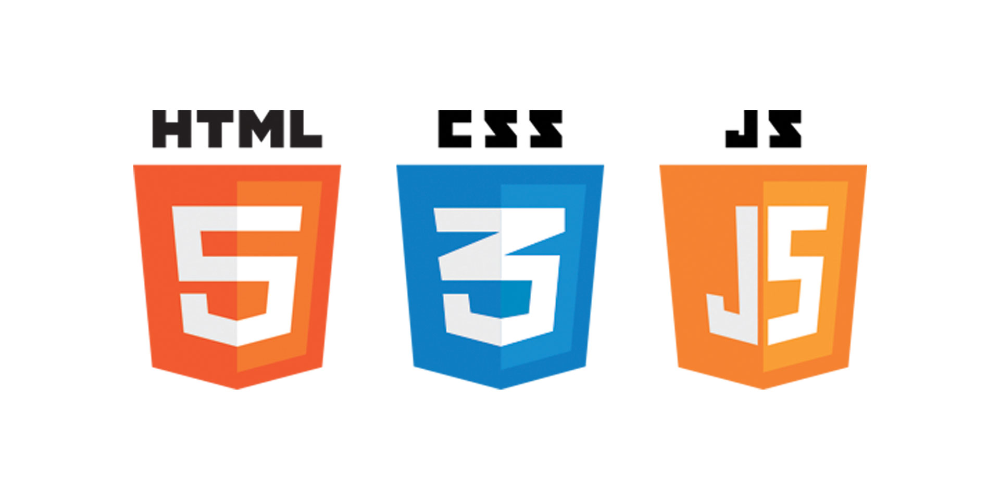
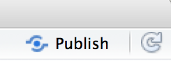
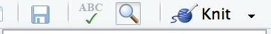
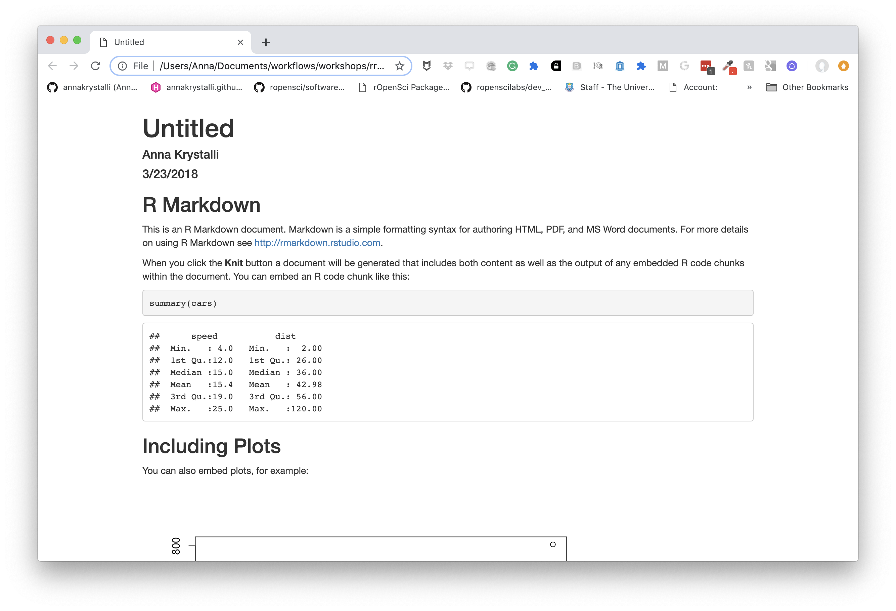
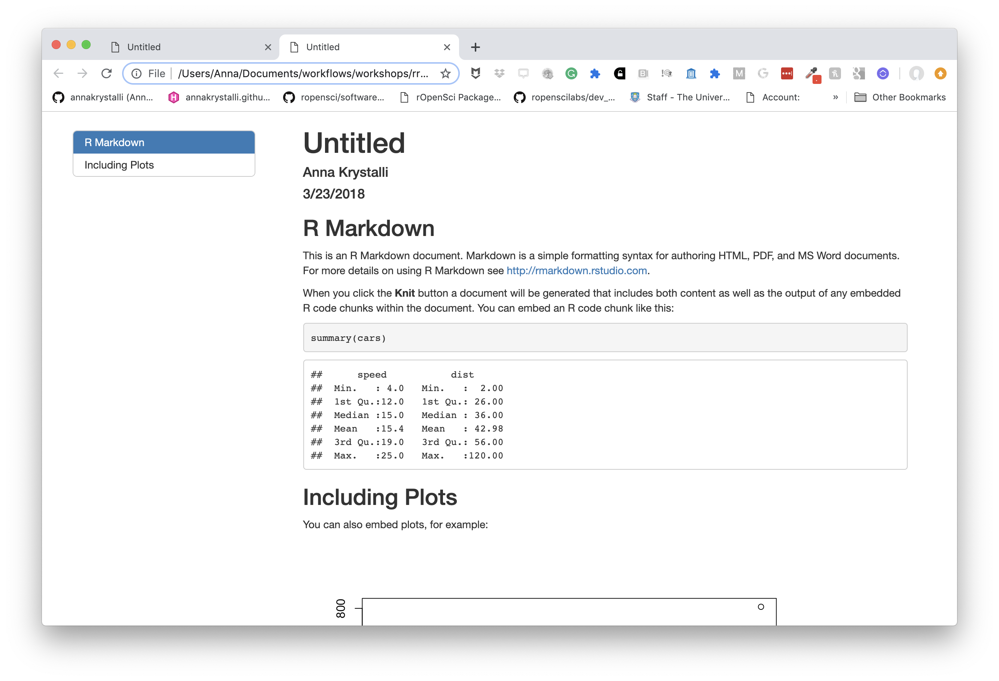
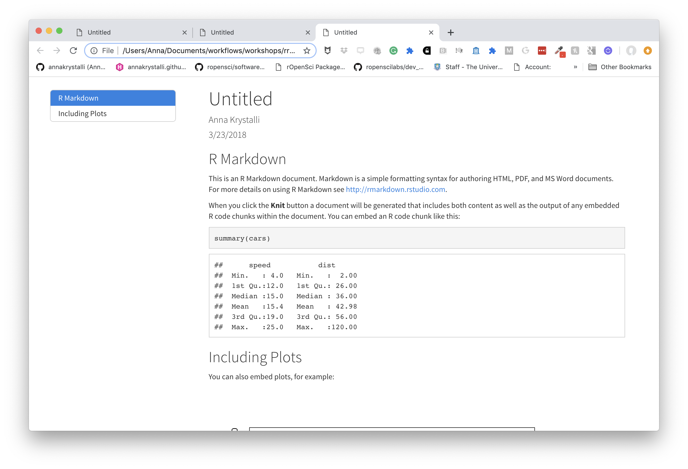
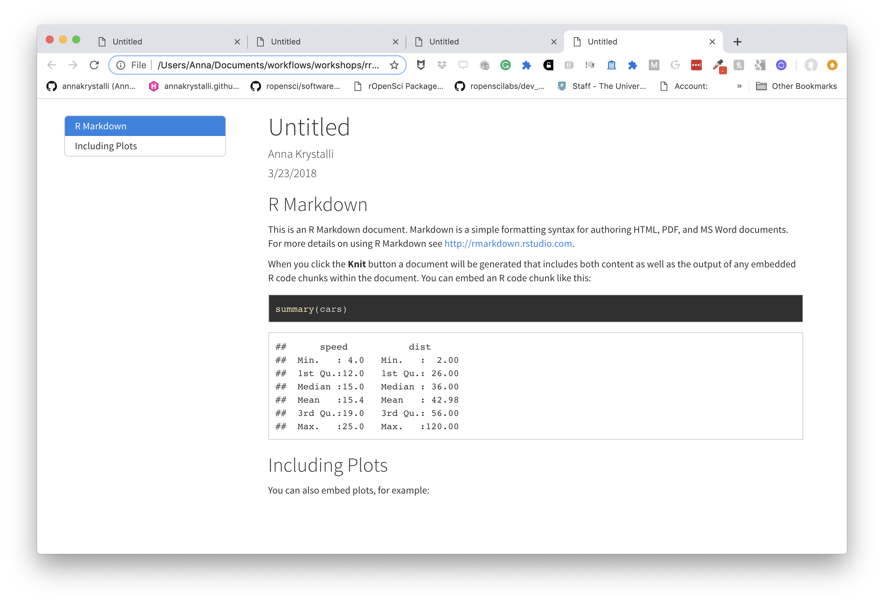
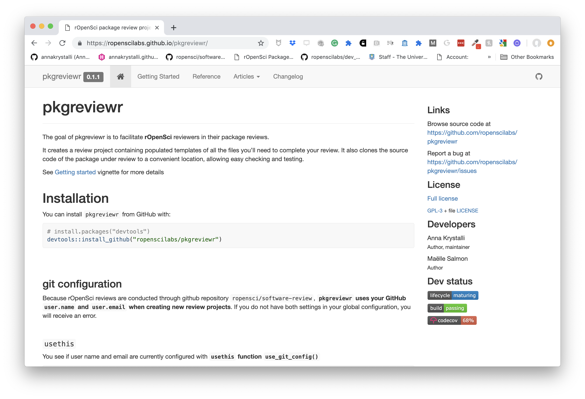
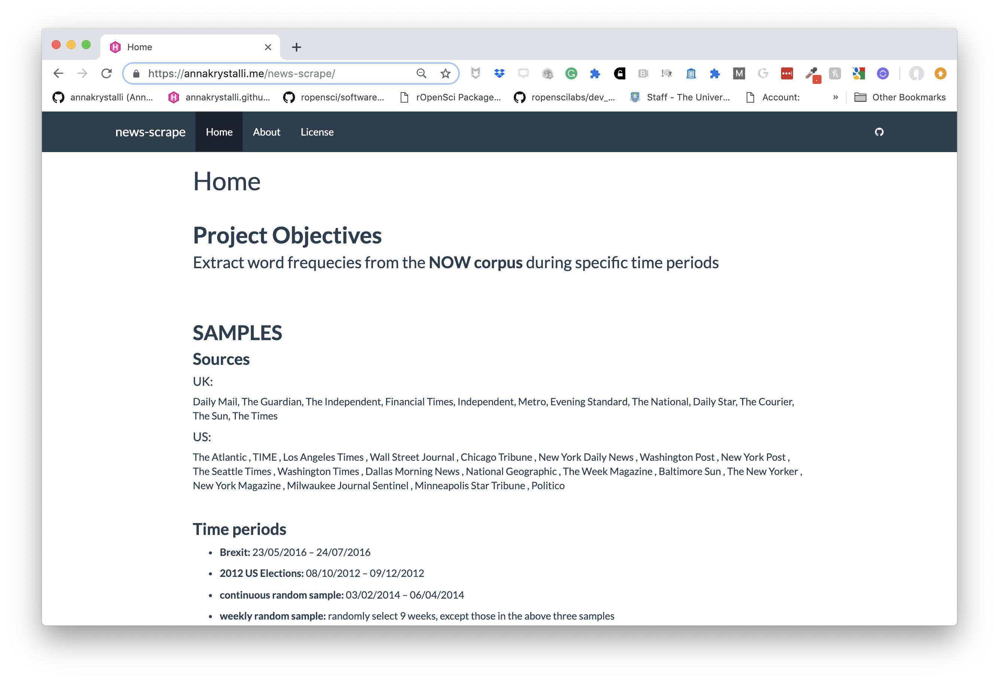
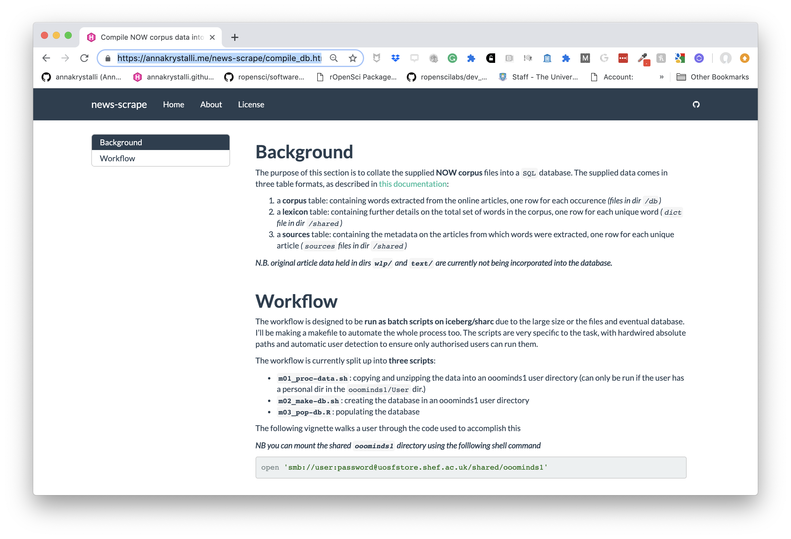

Literate Programming in rmarkdown
Literate programming
Literate programming is a programming paradigm first introduced by Donald E. Knuth.
Treat program as literature meant to be understandable to human beings
- move away from writing programs in the manner and order imposed by the computer
- focus instead on the logic and flow of human thought and understanding
- single document to integrate data analysis (executable code) with textual documentation, linking data, code, and text
Why is this important in science:
Enables reproducibility
Enables reproducibility through packaging code, text and output into a single executable document.
Enables open science
Literate programming allows us to record and publish information and discussions about code and analyses in more readable formats.

… highlight problems with users jumping straight into software implementations of methods (e.g. in r) that may lack documentation on biases and assumptions that are mentioned in the original papers.
To help solve these problems, we make a number of suggestions including providing blog posts or videos to explain new methods in less technical terms, encouraging reproducibility and code sharing, making wiki-style pages summarising the literature on popular methods, more careful consideration and testing of whether a method is appropriate for a given question/data set, increased collaboration, and a shift from publishing purely novel methods to publishing improvements to existing methods and ways of detecting biases or testing model fit. Many of these points are applicable across methods in ecology and evolution, not just phylogenetic comparative methods.
Literate programming in R
Rmarkdown (Rmd) Overview
Rmarkdown integrates:
– a documentantion language (.md)
– a programming language (R)
Allows us to combine tools, processes and outputs into interactive evidence streams that are easily shareable, particularly through the web.
A researchers perspective on Rmarkdown
A reproducible workflow in action:
Elements of R markdown
markdown {.md}
Simplified version of the html markup language. User can focus on communicating & disseminating
intended to be as easy-to-read and easy-to-write as possible.
most powerful as a format for writing to the web.
syntax is very small, corresponding only to a very small subset of HTML tags.
clean and legible across platforms (even mobile) and outputs.
formatting handled automatically
html markup language also handled.
code {r, python, SQL, … }
Code chunks defined through special notation. Executed in sequence. Exceution of individual chunks controllable
Analysis self-contained and reproducible
- Run in a fresh R session every time document is knit.
A number of Language Engines are supported by
knitr- R (default)
- Python
- SQL
- Bash
- Rcpp
- Stan
- JavaScript
- CSS
Can read appropriately annotated
.Rscripts in and call them within an.Rmd
outputs
Knit together through package knitr to a variety of useful formats

Many great packages and applications build on rmarkdown.
All this makes it incredibly versatile. Check out the Rmarkdown gallery.
Superpower: Simple interface to powerful modern web technologies and libraries

Publish to the web for free!
RPubs:
Publish rendered rmarkdown documents on the web with the click of a button http://rpubs.com/


GitHub:
Host your site through gh-pages on GitHub. Can host entire websites, like this course material https://github.com/
Applications of Rmd in research
Rmd documents can be useful for a number of research related materials
- Vignettes: long form documentation.
- Analyses
- Documentation (code & data)
- Supplementary materials
- Reports
- Papers
- Personal research websites and blogs
- Theses!
Useful features through bookdown: bibliographies and citations
Rmd in Practice
Exercise Part 1
We will use Rmarkdown to create a reproducible presentation document for our analysis, combining our code and it’s output with text in the form of markdown!
Later, once we start working with git and GitHub, we’ll also publish it online.
Create your first .Rmd!

Save as index.Rmd
Before knitting, the document needs to be saved. Give it a useful name, e.g. index.Rmd. Index has a special meaning for websites indicating the landing page of a given url.
Render index.Rmd
Render the document by clicking on the knit button.

You can also render .Rmd documents to html using rmarkdown function render()
rmarkdown::render(input = "index.Rmd")Publish your .Rmd
Register an account on RPubs
Publish your rendered document (don’t worry, you can delete or overwrite it later)
Complete YAML header
The yaml header contains metadata about the document.
It is contained between the --- separators at the top of the file and is encoded as YAML, a human friendly data serialization standard for all programming languages.
The key thing to know about YAML is that indentation is extremely important!. So make sure you copy any example YAML code exactly, ensuring correct indentation. If you get errors, check your indentation.
---
title: "Untitled"
author: "Anna Krystalli"
date: "3/23/2018"
output: html_document
---Define outputs
There are many output formats available in .Rmd.

The output format is defined in the YAML header through parameter output.
basic html_document
Markdown was originally designed for HTML output, so it may not be surprising that the HTML format has the richest features among all output formats. Here we’ll be focusing on on the html_document output.
This is the default output when creating a new blank .Rmd.
title: "Untitled"
author: "Anna Krystalli"
date: "3/23/2018"
output: html_document

Add a floating table of contents
We can add a table of contents (TOC) using the toc option and specify a floating toc using the toc_float option. For example:
---
title: "Untitled"
author: "Anna Krystalli"
date: "3/23/2018"
output:
html_document:
toc: true
toc_float: true
---
Choose a theme
There are several options that control the appearance of HTML documents:
themespecifies the Bootstrap theme to use for the page (themes are drawn from the Bootswatch theme library). Valid themes includedefault,cerulean,journal,flatly,darkly,readable,spacelab,united,cosmo,lumen,paper,sandstone,simplex, andyeti.
---
title: "Untitled"
author: "Anna Krystalli"
date: "3/23/2018"
output:
html_document:
toc: true
toc_float: true
theme: cosmo
---
Choose code highlights
highlight specifies the syntax highlighting style. Supported styles include default, tango, pygments, kate, monochrome, espresso, zenburn, haddock, breezedark, and textmate.
---
title: "Untitled"
author: "Anna Krystalli"
date: "3/23/2018"
output:
html_document:
toc: true
toc_float: true
theme: cosmo
highlight: zenburn
---
Exercise Part 2
Customise your own Rmd
Add a title.
Add your name.
Add a floating table of contents.
Set a theme of your choice (see avalable themes here and the associated bootstrap styles here).
Clear everything BELOW THE YAML header. You should be left with just this:
--- title: "Analysis of NEON Woody plant vegetation structure data" author: "Anna Krystalli" date: "3/23/2018" output: html_document: toc: true toc_float: true theme: cosmo highlight: zenburn ---
Markdown basics
The text in an R Markdown document is written with the Markdown syntax. Precisely speaking, it is Pandoc’s Markdown.
We use a small number of notations to markup our text with some common html tags
text
normal textnormal text
*italic text*italic text
**bold text**bold text
***bold italic text***bold italic text
superscript^2^superscript2
~~strikethrough~~strikethrough
headers
rmarkdown
# Header 1
## Header 2
### Header 3
#### Header 4
##### Header 5
###### Header 6rendered html

unordered lists
rmarkdown
- first item in the list
- second item in list
- third item in listrendered html
- first item in the list
- second item in list
- third item in list
ordered lists
rmarkdown
1. first item in the list
1. second item in list
1. third item in listrendered html
- first item in the list
- second item in list
- third item in list
quotes
rmarkdown
> this text will be quotedrendered html
this text will be quoted
code
annotate code inline
rmarkdown
`this text will appear as code` inlinerendered html
this text will appear as code inline
Evaluate r code inline
a <- 10rmarkdown
the value of parameter *a* is `r a`
rendered html
the value of parameter a is 10
Images
Provide either a path to a local image file or the URL of an image.
rmarkdown

rendered html

resize images with html
html in rmarkdown
<img src="assets/cheat.png" width="200px" />rendered html
Basic tables in markdown
rmarkdown
Table Header | Second Header
- | -
Cell 1 | Cell 2
Cell 3 | Cell 4 rendered html
| Table Header | Second Header |
|---|---|
| Cell 1 | Cell 2 |
| Cell 3 | Cell 4 |
Check out handy online .md table converter
Links
rmarkdown
[Download R](http://www.r-project.org/)
[RStudio](http://www.rstudio.com/)rendered html
Mathematical expressions
Supports mathematical notations through MathJax.
You can write LaTeX math expressions inside a pair of dollar signs, e.g. $\alpha+\beta$ renders \(\alpha+\beta\). You can use the display style with double dollar signs:
$$\bar{X}=\frac{1}{n}\sum_{i=1}^nX_i$$\[\bar{X}=\frac{1}{n}\sum_{i=1}^nX_i\]
💻 Exercise: Part 3
Create a "Background" section using headers
Write a short description of the data set and analysis
Write a short description of the NEON Woody plant vegetation structure dataset and the objective of the analysis.
Have a look at the page on the NEON data portal for inspiration.
Make use of markdown annotation to:
- highlight important information
- include links to sources or further information.
Add an image
Add an image related to the data.
- perhaps a logo or a relevant image to the organisms in question
- have a look online, especially on sites like unsplash that offer free to use images.
- include the source URL underneath for attribution.
- see if you can resize it.
Chunks & Inline R code
R code chunks execute code.
They can be used as a means to perform computations, render R output like text, tables, or graphics into documents or to simply display code for illustration without evaluating it.

Inserting new chunks
You can quickly insert an R code chunk with:
- the keyboard shortcut
Ctrl + Alt + I(OS X:Cmd + Option + I) - the Add Chunk
 command in the RStudio toolbar
command in the RStudio toolbar - by typing the chunk delimiters
```{r} and ```.
Chunk notation
chunk notation in .rmd
```{r chunk-name}
print('hello world!')
```rendered html code and output
print('hello world!')## [1] "hello world!"Chunks can be labelled with chunk names, names must be unique.
```{r chunk-label}Chunk options
Chunk options control how code and outputs are evaluated and presented.
You have fine control over all these output via chunk options, which can be provided inside the curly braces (between
```{rand}).Chunk options are separated by commas, e.g.:
```{r, results='hide', fig.height=4}

for more details see http://yihui.name/knitr/
controlling code display with echo
chunk notation in .rmd
```{r hide-code, echo=FALSE}
print('hello world!')
```rendered html code and output
## [1] "hello world!"controlling code evaluation with eval
chunk notation in .rmd
```{r dont-eval, eval=FALSE}
print('hello world!')
```rendered html code and output
print('hello world!')setting document level default options
knitr::opts_chunk$set(echo = TRUE, warning = F, message = F)reading chunks of code from an R script
R->Rmd
We can also read in chunks of code from an annotated .R (or any other language) script using knitr::read_chunks()
This is extremely powerful beacuse it means we can recycle code and more importantly, present an analysis while maintaining a single copy of the source code in a separate script.
Marking up chunks in a script
Chunks are defined by the following notation in scripts ## @knitr. Names must be unique and there must be no empty code lines or other comments in between.
## @knitr descriptive-chunk-name1
code("you want to run as a chunk")
## @knitr descriptive-chunk-name2 -
code("you want to run as a chunk")Chunks are read in using:
knitr::read_chunk("path/to/Rscript")Call chunk by name
Once the script is read in with knitr::read_chunk(), we can call individual chunks using their name.
rmarkdown r chunk notation
```{r descriptive-chunk-name1}
```read_chunk example
code in .R script hello-world.R
hello-world.R
## @knitr demo-read_chunk
print("hello world")Read chunks from hello-world.R
knitr::read_chunk(here::here("demos","hello-world.R"))Call chunk by name
rmarkdown r chunk notation
```{r demo-read_chunk}
```rendered html code and output
print("hello world")## [1] "hello world"Check chunks in the current session
knitr:::knit_code$get() 💻 Exercise Part 4
For this exercise we’ll create a Data section, load our data in and present some summaries. We’ll use code contained in our analysis script.
Annotate chunks in analysis.R script
Annotate each chunk with the special comment
## @knitrfollowed by a space and the unique code chunk name.When finished, your script should look like:
## @knitr analysis-setup library(dplyr) library(ggplot2) individual <- readr::read_csv(here::here("data", "individual.csv")) %>% select(stem_diameter, height, growth_form) ## @knitr analysis-filter-data analysis_df <- individual %>% filter(!is.na(growth_form), growth_form != "liana") ## @knitr analysis-set-factor-levels gf_levels <- table(analysis_df$growth_form) %>% sort() %>% names() analysis_df <- analysis_df %>% mutate(growth_form = factor(growth_form, levels = gf_levels)) ## @knitr analysis-fig1-barplot analysis_df %>% ggplot(aes(y = growth_form, colour = growth_form, fill = growth_form)) + geom_bar(alpha = 0.5, show.legend = FALSE) ## @knitr analysis-fig2-violinplots analysis_df %>% tidyr::pivot_longer(cols = c(stem_diameter, height), names_to = "var", values_to = "value") %>% ggplot(aes(x = log(value), y = growth_form, colour = growth_form, fill = growth_form)) + geom_violin(alpha = 0.5, trim = TRUE, show.legend = FALSE) + geom_boxplot(alpha = 0.7, show.legend = FALSE) + facet_grid(~var) ## @knitr analysis-lm-overall lm_overall <- lm(log(stem_diameter) ~ log(height), analysis_df) lm_overall %>% broom::glance() lm_overall %>% broom::tidy() ## @knitr analysis-lm-fig3-overall analysis_df %>% ggplot(aes(x = log(height), y = log(stem_diameter))) + geom_point(alpha = 0.2) + geom_smooth(method = "lm") ## @knitr analysis-lm-growth lm_growth <- lm(log(stem_diameter) ~ log(height) * growth_form, analysis_df) lm_growth %>% broom::glance() lm_growth %>% broom::tidy() ## @knitr analysis-lm-fig4-growth analysis_df %>% ggplot(aes(x = log(height), y = log(stem_diameter), colour = growth_form)) + geom_point(alpha = 0.1) + geom_smooth(method = "lm")
Create a Data section and
- Create a Data section using headers.
- In a hiden chunk of code, read in the chunks from
analysis.Rusingknitr::read_chunk(). - Load the data by creating a new chunk invoking the
analysis-setupchunk. - Create some additional chunks and present statistical summaries (eg using
summary()). - Add some simple markdown notes about what the code has been doing.
- See if you can include the number of
rowsandcolumnsin an inline description of the dataset (hint: usenrow()&ncol().
Displaying data
There are many ways you can display data and data properties in an .Rmd.
printing tibbless
tibble::as_tibble(airquality)## # A tibble: 153 x 6
## Ozone Solar.R Wind Temp Month Day
## <int> <int> <dbl> <int> <int> <int>
## 1 41 190 7.4 67 5 1
## 2 36 118 8 72 5 2
## 3 12 149 12.6 74 5 3
## 4 18 313 11.5 62 5 4
## 5 NA NA 14.3 56 5 5
## 6 28 NA 14.9 66 5 6
## 7 23 299 8.6 65 5 7
## 8 19 99 13.8 59 5 8
## 9 8 19 20.1 61 5 9
## 10 NA 194 8.6 69 5 10
## # … with 143 more rowsDisplaying knitr::kable() tables
We can use other packages to create html tables from our data.
The simplest is to use the knitr::kable() function.
knitr::kable(head(airquality), caption = "New York Air Quality Measurements")| Ozone | Solar.R | Wind | Temp | Month | Day |
|---|---|---|---|---|---|
| 41 | 190 | 7.4 | 67 | 5 | 1 |
| 36 | 118 | 8.0 | 72 | 5 | 2 |
| 12 | 149 | 12.6 | 74 | 5 | 3 |
| 18 | 313 | 11.5 | 62 | 5 | 4 |
| NA | NA | 14.3 | 56 | 5 | 5 |
| 28 | NA | 14.9 | 66 | 5 | 6 |
Displaying interactive DT::datatable() tables
You can display interactive html tables using function DT::datatable():
DT::datatable(airquality, caption = "New York Air Quality Measurements")💻 Exercise Part 5
Display the data
Choose any method you prefer and create a new chunk to display the data in the Data section.
💻 Exercise Part 6
Write the analysis section
- Create a new section called Analysis.
- Create chunks and invoke the rest of the steps in our analysis.
- Use lower level headers to break down the workflow and include some minimal explanatory text.
- Add a caption to each figure.
- Experiment with controlling figure output width or height using chunk options
fig.widthorfig.height.
Details on chunk arguments related to plotting
End the document with a Session Info Section
- Create a new section called Session Info
- Create a new chunk and use function
sessionInfo()to print session information about your analysis environment
My final index.Rmd looks like this:
---
title: "Analysis of NEON Woody plant vegetation structure data"
author: "Anna Krystalli"
date: "2021-05-05"
output:
html_document:
toc: true
toc_float: true
theme: cosmo
highlight: zenburn
---
# Background
<img src="https://data.neonscience.org/data-products/static/media/NSF-NEON-logo.192b6661.png" width="40%">
The [NEON Woody plant vegetation structure dataset](https://data.neonscience.org/data-products/DP1.10098.001) contains structure measurements, including height, canopy diameter, and stem diameter, as well as mapped position of individual woody plants across the survey area.
This data product contains the quality-controlled, native sampling resolution data from in-situ measurements of live and standing dead woody individuals and shrub groups, from all terrestrial NEON sites with qualifying woody vegetation. The exact measurements collected per individual depend on growth form, and these measurements are focused on enabling biomass and productivity estimation, estimation of shrub volume and biomass, and calibration / validation of multiple NEON airborne remote-sensing data products.
Our analyses focus on the **relationship between individual stem height and diameter** and how that relationship **varies across growth forms**.
# Data
The data were downloaded from the NEON data portal and processed into a single table using script `data-raw/individual.R`
```{r, echo = FALSE}
knitr::opts_chunk$set(message = FALSE)
```
```{r read-chunks, echo=FALSE}
knitr::read_chunk("analysis.R")
```
## Read in data and setup analysis
First we read in the data and select only the columns we are interested in, i.e `stem_diameter`, `height` and `growth_form`
```{r analysis-setup}
```
```{r}
summary(individual)
```
## Prepare data
To prepare the data we exclude rows for which the value of `growth_form` was `NA` or `liana`.
```{r analysis-filter-data}
```
We also convert `growth_form` to a factor and set the levels according to ascending counts of each level in the raw data.
```{r analysis-set-factor-levels}
```
```{r, echo=FALSE}
DT::datatable(analysis_df, caption = "Table 1: Prepared analysis data")
```
## Data properties
### Statistical summaries of variables
```{r}
summary(analysis_df)
```
```{r analysis-fig1-barplot, fig.cap="Figure 1: Counts of growth forms"}
```
```{r analysis-fig2-violinplots, fig.cap="Figure 2: Distribution and statistical summaries of stem_diameter and height across growth_forms"}
```
# Analysis
## Modelling overall `stem_diameter` as a function of `height`
Initially we fit a linear model of form `log(stem_diameter)` as a function of `log(height)`
```{r analysis-lm-overall}
```
Our model is statistically significant and has modest coverage, indicated by `r.squared` of `r broom::glance(lm_overall)$r.squared`
```{r analysis-lm-fig3-overall}
```
However, plotting our data reveals sub groups in the data. We can examine whether including `growth_form` in our analysis would improve our model fit by capturing variation explained by differing relationships across growth forms
## Including an interaction with `growth_form`
We fit another model, this time including an interaction term for variable `growth_form`
```{r analysis-lm-growth}
```
Our model is still significant but this time explains a larger proportion of the variation (`r broom::glance(lm_growth)$r.squared`).
```{r analysis-lm-fig4-growth, fig.cap="Figure 4: Log stem diameter as a function of the interaction of log height and growth form"}
```
# Session Info
```{r}
sessionInfo()
```and renders to:
Exercise Part 7 Publish your work
Publish your report on Rpubs
- Add the link to your published document to our collaborative notepad
Advanced .Rmd
Extracting code from an .Rmd
Rmd->R
You can use knitr::purl() to tangle code out of an Rmd into an .R script. purl takes many of the same arguments as knit(). The most important additional argument is:
documentation: an integer specifying the level of documentation to go the tangled script:- 0 means pure code (discard all text chunks)
- 1 (default) means add the chunk headers to code
- 2 means add all text chunks to code as roxygen comments
purl("file-to-extract-code-from.Rmd", documentation = 0)extract using purl
Here i’m running a loop to extract the code in demo-rmd.Rmd for each documentation level
file <- here::here("demos","demo-rmd.Rmd")
for(docu in 0:2){
knitr::purl(file, output = paste0(gsub(".Rmd", "", file), "_", docu, ".R"),
documentation = docu, quiet = T)
}demo-rmd_0.R
knitr::opts_chunk$set(echo = TRUE)
summary(cars)
plot(pressure)demo-rmd_1.R
## ----setup, include=FALSE------------------------------------------------
knitr::opts_chunk$set(echo = TRUE)
## ----cars----------------------------------------------------------------
summary(cars)
## ----pressure, echo=FALSE------------------------------------------------
plot(pressure)demo-rmd_2.R
#' ---
#' title: "Untitled"
#' author: "Anna Krystalli"
#' date: "3/23/2018"
#' output:
#' html_document:
#' toc: true
#' toc_float: true
#' theme: cosmo
#' highlight: textmate
#'
#' ---
#'
## ----setup, include=FALSE------------------------------------------------
knitr::opts_chunk$set(echo = TRUE)
#'
#' ## R Markdown
#'
#'
#' This is an R Markdown document. Markdown is a simple formatting syntax for authoring HTML, PDF, and MS Word documents. For more details on using R Markdown see <http://rmarkdown.rstudio.com>.
#'
#' When you click the **Knit** button a document will be generated that includes both content as well as the output of any embedded R code chunks within the document. You can embed an R code chunk like this:
#'
## ----cars----------------------------------------------------------------
summary(cars)
#'
#' ## Including Plots
#'
#' You can also embed plots, for example:
#'
## ----pressure, echo=FALSE------------------------------------------------
plot(pressure)
#'
#' Note that the `echo = FALSE` parameter was added to the code chunk to prevent printing of the R code that generated the plot.
#'
#' 💻 Exercise: Part 8*
purl your document
Once your document is ready, try and extract the contents of your .Rmd into another .R script.
?purl
html in rmarkdown
embedding tweets
This snipped copied from twitter in the embed format
<blockquote class="twitter-tweet" data-lang="en"><p lang="en" dir="ltr">How cool does this tweet look embedded in <a href="https://twitter.com/hashtag/rmarkdown?src=hash&ref_src=twsrc%5Etfw">#rmarkdown</a>! 😎</p>— annakrystalli (@annakrystalli) <a href="https://twitter.com/annakrystalli/status/977209749958791168?ref_src=twsrc%5Etfw">March 23, 2018</a></blockquote>
<script async src="https://platform.twitter.com/widgets.js" charset="utf-8"></script>
renders to this
How cool does this tweet look embedded in #rmarkdown! 😎
— annakrystalli (@annakrystalli) March 23, 2018
Embbed gifs, videos, widgets in this way
Getting help with markdown
To get help, you need a reproducible example
- github issues
- stackoverflow
- slack channels
- discussion boards
reprex
install.packages("reprex")Use function reprex::reprex() to produce a reproducible example in a custom markdown format for the venue of your choice
"gh"for GitHub (default)"so"for StackOverflow,"r"or"R"for a runnable R script, with commented output interleaved.
using reprex
Copy the code you want to run.
all required variables must be defined and libraries loadedIn the console, call the
reprexfunctionreprex::reprex()- the code is executed in a fresh environment and “code + commented output” is returned invisibly on the clipboard.
Paste the result in the venue of your choice.
- Once published it will be rendered to html.
bookdown
Authoring with R Markdown. Offers:
- cross-references,
- citations,
- HTML widgets and Shiny apps,
- tables of content and section numbering
The publication can be exported to HTML, PDF, and e-books (e.g. EPUB) Can even be used to write thesis!
<img src=“assets/logo_bookdown.png”, width=“200px”/> <img src=“assets/cover_bookdown.jpg”, width=“200px”/>
pkgdown
For buidling package documentation
- Can use it to document any functional code you produce and demonstrate it’s us ethrough vignettes

workflowr pkg
Build analyses websites and organise your project
The workflowr R package makes it easier for researchers to organize their projects and share their results with colleagues.
 ]
blogdown
For creating and mantaining blogs.
Check out https://awesome-blogdown.com/, a curated list of awesome #rstats blogs in blogdown for inspiration!
bookdown
For creating and mantaining online books
Thesisdown
An updated R Markdown thesis template using the bookdown package